The review tables
For event organisersNot an organiser?
The review tables are very useful tools for having an overview of review information, and to manipulate and extract data.#
NB. To become familiar with the Review tables layout and tools, see An overview of tables.
The Review tables contain accordion rows. You can assign reviewers, edit reviews, and download reports.
Go to Event dashboard → Abstract Management → Reviews
Skip to Accordion rows
Go to How to email submitters from tables.
This will reveal the review table window. There are two tables - the default option isReviews by submission (ordered according to submission ID) and Reviews by reviewer(ordered according to reviewer). You can access these by clicking By submission, or By reviewer
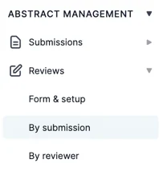
You will see a column with the header Show reviews. These will reveal the child rows. See Accordion rows below for more guidance.
The accordion rows under Reviews by submission table main rows contain the reviews assigned to the submission, those under the Reviews by reviewertable contain the submissions assigned to the reviewer.
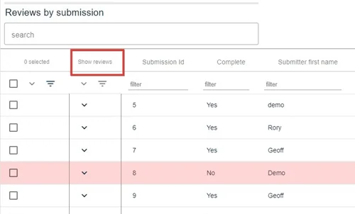
Each table has the same tools to search, order, filter and download reports. To assign reviewers, click here.
Columns
In the top right of the screen, click on the arrow shown below to access the options for column display.
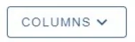
You will see two lists - on the left, the list of fields for the main table, the right, the list of fields for the 'accordion', or 'child' row, which are the responses to the review form.
NB: the reviews will appear in the accordion rows only when you have assigned a reviewer.
The Main table columns are split into three groups Submission data, Review data and Submission responses
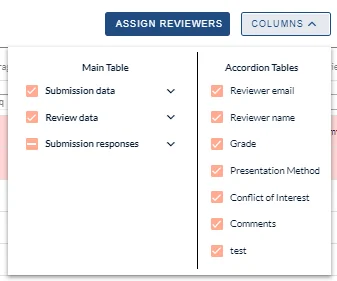
Click the down arrow to reveal the group.
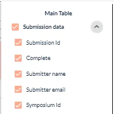
You can then select as few or as many as you need.
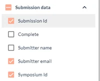
Do the same for the accordion rows.
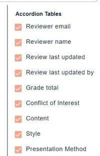
Then click the up arrow to hide the selection window.
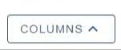
Accordion rows
You will see a column of down arrows in the second column of the table, headed Show reviews. These expose the child rows. Click on the top one (red) to reveal all rows, or select individually (blue).
The icon noted with the green arrow allows you to hide the empty rows when filtering in the accordion rows (see below).
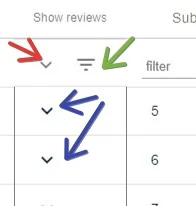
When you reveal any accordion rows, an additional icon will appear. This will allow you to truncate or untruncate the list of reviews on display.
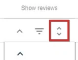
Each review will appear in 'child' rows. These can be filtered and ordered in the same way as the 'parent' rows.
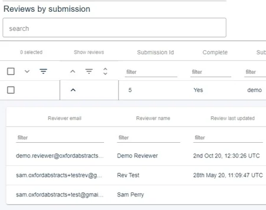
If you would like to search the accordion rows:
1) Ensure the relevant accordion rows are on display.
2) Enter the search term in the relevant column (red). You can then select Hide empty rows if required (green).
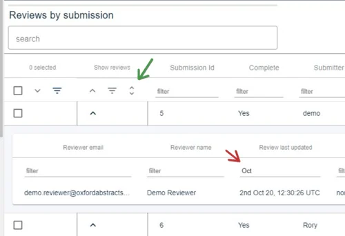

Didn't solve it? Ask our support team
No question is too small, and there's no charge for asking. Raise a ticket and someone who knows the software will pick it up.
Did this page solve it?
Thanks — this helps us fix it.